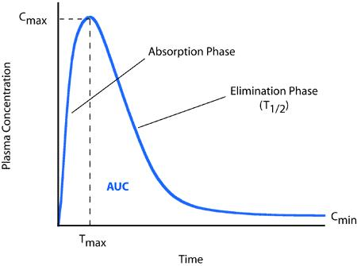
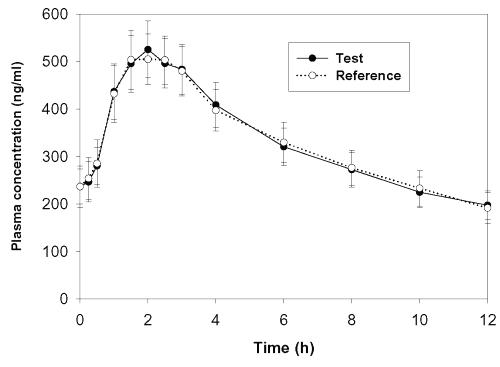
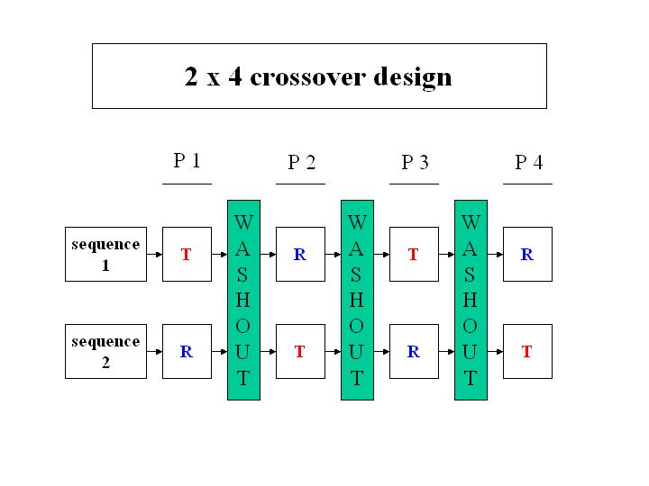

제 3 장 교차실험과 동등성 검정
3.1 생체이용률(Bioavailability)
the rate and extent to which the active ingredient is absorbed from a drug product and becomes available at the site of action
주성분 또는 그 활성대사체가 제제로부터 전신순환혈로 흡수되는 속도와 양의 비율
Pharmacokinetic (PK) measures (평가항목) of bioavailability
- \(AUC_t\): Area under the blood or plasma concentration-time curve; 일정시간까지 혈중농도-시간곡선하면적
- \(C_{max}\): Maximum Concentration; 최고혈중농도
- \(T_{max}\): Time to Maximum Concentration; 최고혈중농도 도달시간

3.2 약품 주성분의 생체이용률의 평균적 변화

3.3 생물학적동등성의 정의: FDA 과 KFDA
Bioequivalence by FDA
absence of a significant difference in Bioavailability between two formulations…. when administered at the same molar dose under similar conditions in an appropriately designed study
in vivo: Bioequivalence
in vitro: Bioequivalence
KFDA
의약품동등성시험이란 그 주성분 ·함량 및 제형이 동일한 두 제제에 대한 의약품동등성을 입증하기 위해 실시하는 생물학적동등성시험, 비교용출시험, 비교붕해등 기타시험의 생체내·외 시험을 말한다.
3.4 생물학적동등성 실험의 설계
생체이용률(bioavailibility)은 개인간에 변동이 크다
개인효과(individual effect)를 제거하기 위한 쌍비교 t-검정 (paired t-test)의 개념을 도입
실험자가 두 개의 처리를 모두 받는다.
생동성실험은 주로 교차시험(crossover design)을 이용한다.
제재의 반감기가 긴 경우 등 특수한 경우는 병렬계획(Parallel design) 실험도 가능하다.
2x2 교차실험

- 2x4 교차시험

3.5 교차실험에 대한 통계적 모형
보통 10-20명의 실험 대상자
각 실험 대상자가 2개(3개 또는 4개)의 반응값(PK responses)을 가진다.
각 실험대상자의 반응값은 독립이 아니다 (correlated response; repeated measurements)
실험대상자 간의 변이가 크다 (large between-subject variation)
시험약과 대조약간의 (로그)반응값의 평균의 차이가 주 검토대상이다.
정규분포를 가정한 선형혼합모형(linear mixed model)
3.6 평균적 생물학적동등성에 대한 가설
- The absence of a significant difference (중대한 차이가 없다) in two between two formulations .
= 시험약(T)과 대조약(R)간의 반응값의 평균의 차이: \(\mu_T-\mu_R\):
보통 반응변수(PK response)에 로그를 취한 뒤 통계분석
\(\delta=\mu_T-\mu_R\): 시험약(T)과 대조약(R)간의 로그 반응값의 평균의 차이
평균적 생물학적동등성에 대한 가설
\[ H_0: \delta \le \delta_L ~~~or~~~ \delta \ge \delta_U \quad vs. \quad H_1: \delta_L < \delta < \delta_U \]
- 동등성 한계 (bioequivalence limit)
\[ \delta_L=-0.223=log(0.8) \quad and \quad \delta_U=0.223=log(1.25) \]
- 평균적 생물학적동등성에 대한 가설(로그변환 전)
\[ H_1: 0.8 < \frac{\mu'_T}{\mu'_R} < 1.25 \]
- 평균적 생물학적동등성을 어떤 통계적 방법으로 검정할 것인가?
\[ H_0: \delta \le \delta_L ~~~or~~~ \delta \ge \delta_U \quad vs. \quad H_1: \delta_L < \delta < \delta_U \]
Historical development of statistical tests for ABE
Westlake (1976), Hsu (1984), Bofinger (1985, 1992), Schuirmann (1987), Liu(1990)
Berger and Hsu (1996), Brown, Hwang, and Munk (1997), Perlman and Wu (1999), Welleck (2003), Romano (2005)
FDA guidance: 1992, 1997, 1999, 2000 and some drafts
가설
\[ H_0: |\mu_T-\mu_R| \ge \delta \quad vs. \quad H_1: |\mu_T-\mu_R| < \delta \]
신뢰구간을 이용한 방법
2개의 단측검정을 결합한 방법 (Two ones-sided tests; TOST)
\[ H_{01}: \mu_T-\mu_R < -\delta \text{ and } H_{02}: \mu_T-\mu_R > \delta \]
3.7 신뢰구간을 이용한 평균적 생물학적동등성 검정
- 가설
\[ H_0: |\mu_T-\mu_R| \ge \delta \quad vs. \quad H_1: |\mu_T-\mu_R| < \delta \]
\(\mu_T-\mu_R\) 에 대한 신뢰구간 \(C(Y)\) 를 구한다.
신뢰구간이 동등성 한계안에 포함되면 평균적 생물학적동등성 선언!
\[ C(y) \subset (-\delta,\delta) \]
3.8 2개의 단측검정을 이용한 방법
정규분포 가정
각 처리에 대한 평균 \(\bar {y}_T\) 과 \(\bar {y}_R\) 는 \(\mu_T\) 과 \(\mu_R\)의 추정량
\(SE\) 를 \(\bar {y}_T-\bar {y}_R\)의 표준 오차(standard error)라고 하자
다음을 만족하면 귀무가설 \(H_0\)를 기각 (생물학적 동등성을 선언)
\[ \frac{ \bar {y}_T- \bar {y}_R +\delta}{SE} > t_\alpha ~~\text{ and }~~ \frac{ \bar {y}_T- \bar {y}_R -\delta}{SE} <- t_\alpha \]
- 위의 귀무가설 기각조건은 아래와 동일한다 (90% 신뢰구간이 동등성 한계안에 있다)
\[ [(\bar {y}_T- \bar {y}_R - t_\alpha (SE),~ (\bar {y}_T- \bar {y}_R + t_\alpha(SE) )] \subseteq (-\delta,~\delta) \]
TOST is a special case of intersection-union test (Berger and Hsu, 1996)
TOST is level \(2\alpha\) test, but its size is actually \(\alpha\).
\[ \text{size of test } = \sup_{H_0} P( \text{ test rejects } H_0 ) \]
Improved tests are proposed by Berger and Hsu (1996), Brown, Hwang, and Munk (1997), Perlman and Wu (1999), Welleck (2003), Romano (2005)
But, still TOST is widely used because of its validity and simplicity